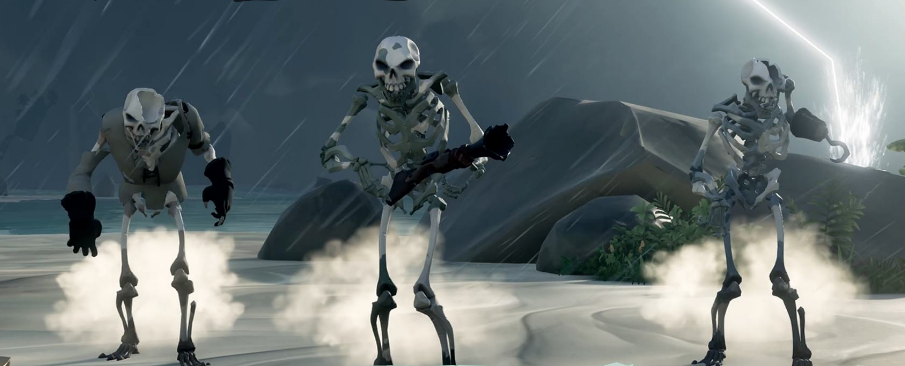

Sea Of Thieves
¡Arrrrrr! ¡Prepara el mosquete y alza tu copa de grog! La legendaria Rare presenta su nueva idea original para Xbox One con Sea of Thieves, un mundo abierto y compartido con el resto de los jugadores en el que vivir inesperadas y peligrosas aventuras piratas. Surca los mares con tus amigos marcando vuestras propias normas y metas en una experiencia cooperativa única completamente impredecible al situar a los jugadores en un universo online compartido en el que nunca sabrás si aquel barco en el horizonte navega en son de paz o está preparándose para un abordaje.
Características: Honor entre piratas. El mar de Sea of Thieves está diseñado para que los jugadores puedan cooperar y compartir recompensas en épicos viajes en busca de tesoros y artefactos olvidados. Pero en el peligroso océano no estarás solo. El mundo de Sea of Thieves es compartido para todos los jugadores y nunca sabrás cuáles son las intenciones de los otros navíos.
¡Quiero ser un pirata! Forma tu propia tripulación escogiendo los trabajos que prefiráis y embarcaos en aventuras o huid del peligro. Aguas turbulentas. La experiencia de Sea of Thieves evoluciona con el tiempo, expandiendo y cambiando un mundo con una dirección artística completamente única.
¿De qué va el videojuego?
Sea of Thieves es un juego multijugador cooperativo de acción y aventura con temática pirata jugado desde una perspectiva en primera persona. El juego cuenta con juego multiplataforma entre ordenadores personales basados en Windows y consolas de videojuegos Xbox One. Un grupo de jugadores viajan y exploran un mundo abierto a través de un barco pirata y asumen diferentes roles como dirección, levantamiento de velas, navegación y cañones de disparo. Los jugadores se embarcan en misiones, recogen botín y se involucran en el combate con otros jugadores. Sea of Thieves es un mundo de juego compartido, lo que significa que los grupos de jugadores se encontrarán regularmente a lo largo de sus aventuras. El juego tiene un estilo de arte de dibujos animados y un motor de física exagerada que permite a los jugadores realizar acrobacias, como ser disparado fuera de los cañones de barco.
Los jugadores pueden recoger monedas completando misiones llamadas viajes, sacando botín de otras naves, o saqueando un fuerte esqueleto que contiene grandes cantidades de oro. El jugador tiene como objetivo convertirse en una leyenda pirata. El oro se puede utilizar para comprar todo, desde armas de re-piel a nuevos cascos y velas para el barco. Estos artículos son cosméticos y no afectan al combate. Las armas se dan al jugador al comienzo del juego, y tienen cinco rondas de munición antes de necesitar encontrar una caja de munición para reponer. Las cuatro armas utilizables son un Flintlock, un blunderbuss, un rifle de francotirador y un machete. Se pueden transportar dos armas a la vez.
Criaturas que podemos encontrar
Animales
-
Pollos: Animal pasivo que frecuentemente cloquea. Pueden ser capturados en una Chicken Coop. Hay pollos de plumas blancas, moteados de color rojo,de plumas negras y pollos de oro.
-
Cerdos: Animal pasivo que requiere de alimentación constante cuando es capturado. Se capturan en una Pig Crate.
-
Serpientes: Animal agresivo que atacará a los jugadores cercanos. Se capturan en las Snake Basket. Pueden ser encantados con música.
Enemigos
Los enemigos son personajes no jugadores (PNJs) que se muestran hostiles hacia los piratas.
-
Esqueletos: Esqueleto que puede ir desarmado, o armados con sables, pistolas o trabucos. También son capaces de usar cañones terrestres para disparar a los barcos. Pueden comer plátanos para recuperar salud.
-
Tiburones: Depredadores acuáticos que con un solo mordisco quitan la mitad de la vida de un jugador. Requieren aproximadamente cuatro golpes de machete o herida de bala para morir.
-
Kraken: Un gigantesco monstruo acuático siempre presente en Sea of Thieves.
-
Megalodones: Una enorme bestia de las profundidades marinas que no dudará en atacar a cualquier nave que se cruce en su camino.
|  |
Requisitos para jugar al juego
| Mínimos | Recomendados | |
| CPU | Intel Core i3-4130T / AMD FX-6300 | Intel Core i5 3470 / AMD X8 FX-8320 |
| RAM | 4 GB | 8 GB |
| SO | Windows 10 (64-bit) / Windows 8.1 (64-bit) / Windows 8 (64-bit) / Windows 7 Service Pack 1 (64-bit) / Windows Vista Service Pack 2 (64-bit) | |
| Tarjeta gráfica | NVIDIA GeForce GTX 650 / AMD Radeon HD 7750 1GB GDDR5 | NVIDIA GeForce GTX 670/ AMD Radeon R9 285 2GB |
| Disco Duro | 60 GB | |
Trailer de Sea Of Thieves
Precio del juego: 38.99€
Volver a la página principal